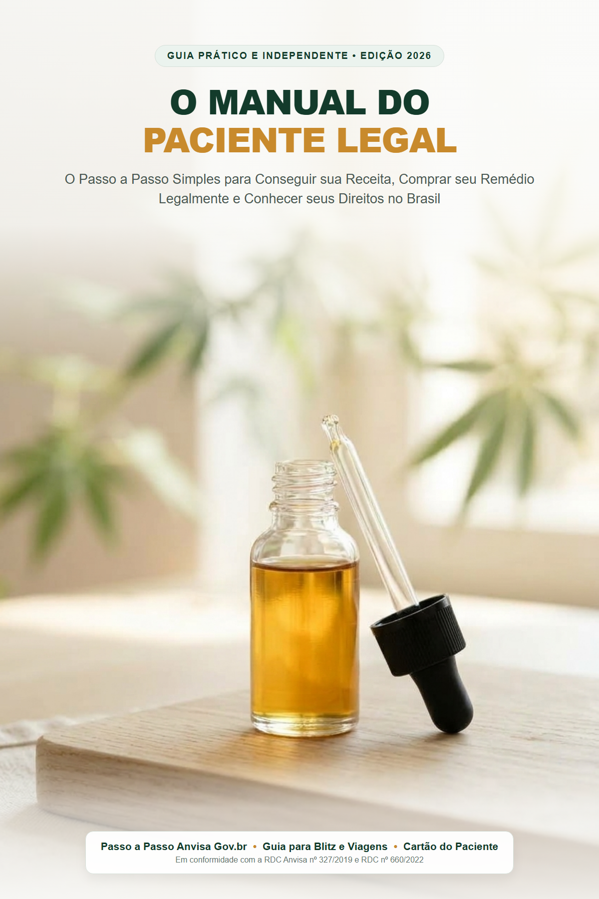

O Passo a Passo Simples para Conseguir sua Receita, Comprar seu Remédio Legalmente e Conhecer seus Direitos no Brasil
Este guia foi escrito apenas para ensinar e informar. Ele não substitui de jeito nenhum uma consulta com um médico de verdade.
Apenas um médico pode dizer se você precisa desse tratamento, qual a dose certa para o seu corpo e qual o melhor produto para a sua saúde.
A cannabis medicinal não é milagre nem cura todas as doenças. Ela é um tratamento de apoio comprovado pela ciência. Nunca pare de tomar os remédios que o seu médico já passou sem falar com ele antes.
No Brasil, para comprar ou receber qualquer produto de cannabis dentro da lei, você sempre vai precisar de uma receita médica em seu nome.
Se você abriu este livro, muito provavelmente está passando por uma destas duas situações:
A primeira coisa que você precisa saber é: o seu medo é perfeitamente normal.
Por quase cem anos, colocaram na cabeça do brasileiro que essa planta servia apenas para o crime. Enquanto as pessoas discutiam preconceito, os maiores cientistas do mundo descobriram algo impressionante: o corpo humano tem um sistema feito especialmente para se conectar com as substâncias dessa planta.
Você não está colocando nada estranho no seu corpo. Você está apenas devolvendo para o seu organismo o equilíbrio que a rotina, o estresse e a idade desgastaram.
Hoje, no Brasil, pacientes comuns compram produtos na farmácia da esquina, recebem encomendas em casa pelo Correio com nota fiscal e viajam de avião pelo país inteiro com o remédio na bolsa, sem medo da polícia.
Este guia foi feito para ser uma conversa direta, simples e transparente. Sem palavras difíceis, sem enrolação e sem rodeios. A partir de agora, você vai entender tudo de forma clara.
Para entender por que a cannabis funciona, você não precisa ser médico. Basta pensar no seu corpo como um carro.
Quando você acelera na estrada, o carro anda. Mas se ele não tiver freio, ele bate.
No seu corpo acontece a mesma coisa:
O problema de quem tem dor crônica, insônia ou ansiedade constante é um só: o freio do corpo quebrou. O alarme de perigo fica disparado dia e noite, e o corpo não consegue mais voltar sozinho para a calma.
Dentro de você existe uma rede de sensores chamada Sistema Endocanabinoide. O nome parece complicado, mas a função dele é simples: ele é o termostato ou o freio do organismo.
Ele é responsável por baixar a febre quando você está com infecção, desligar a dor depois que o machucado começa a sarar e acalmar os pensamentos acelerados na hora de deitar para dormir.
O mais incrível é que o seu próprio corpo fabrica substâncias muito parecidas com as da planta cannabis todos os dias.
Pense nas suas células como se fossem portas cheias de fechaduras. Quando você está bem e tranquilo, o seu corpo produz as "chaves" certas, encaixa nessas fechaduras e mantém a casa em ordem.
Mas quando você passa anos com dor, estresse ou inflamações, o corpo para de produzir chaves suficientes. A casa fica bagunçada.
É aí que o remédio de cannabis entra. Ele traz chaves naturais da planta que se encaixam com perfeição nas mesmas fechaduras do seu corpo, ajudando ele a puxar o freio de mão e voltar ao normal.
A maior dúvida de quem nunca usou é: "Se eu tomar isso, vou ficar rindo à toa, alucinado ou desorientado?".
A resposta direta é: não, se você tomar o remédio certo, na dose certa recomendada pelo médico.
Sabe quando você descasca uma laranja ou sente o cheirinho de um chá de camomila e já sente uma calma gostosa? Esse cheiro vem dos terpenos.
A cannabis não é remédio mágico para tudo. A ciência médica séria já comprovou que ela funciona de verdade nas seguintes situações:
Você não precisa e não deve fumar para se tratar com cannabis. Aliás, nenhum médico sério manda fumar nada.
| Forma de Uso | Como Funciona | Tempo de Início | Duração do Efeito |
|---|---|---|---|
| Óleo Sublingual (Gotas) | Pinga embaixo da língua, segura por 1 minuto e engole. Uso diário basal. | 40 a 90 minutos | 6 a 8 horas (longa duração) |
| Vaporizador de Ervas Secas | Aparelho fechado que esquenta a flor a 180°C sem fogo nem fumaça. | 2 a 5 minutos | 1 a 3 horas (resgate rápido) |
Atenção: Vaporizador de Ervas Secas NÃO É Vape de Nicotina/Essência
Vapes descartáveis e pods contêm líquidos com nicotina e aromatizantes artificiais proibidos pela Anvisa. Já o vaporizador medicinal esquenta a flor natural em câmara de cerâmica ou inox a 180 graus. Não tem fogo, não tem cinza e não tem alcatrão, liberando apenas o vapor com o princípio ativo.
Muita gente desiste antes mesmo de tentar porque ouviu falar que o tratamento custa dois ou três mil reais por mês. Isso era verdade anos atrás. Hoje o mercado mudou completamente.
Compra direta no balcão com receita especial.
R$ 250 a R$ 800 por vidro
Pede autorização na Anvisa e compra do exterior.
R$ 200 a R$ 500 + Frete Dólar
Entidades sem fins lucrativos. Recebe pelo Correio.
R$ 90 a R$ 220 (Até 60% OFF)
Para a maioria dos pacientes que usam uma dose normal de manutenção, o gasto fica entre R$ 120 e R$ 200 por mês comprando de associações brasileiras. Algumas entidades cobram uma pequena anuidade ou mensalidade social (geralmente entre R$ 30 e R$ 50) para custear suporte social e jurídico.
Pela lei brasileira, qualquer médico com CRM ativo pode receitar cannabis medicinal (psiquiatra, neurologista, ortopedista ou clínico geral). Como muitos médicos tradicionais ainda têm insegurança, o caminho mais rápido é buscar profissionais que já atuam na área.
A maioria das pessoas faz a consulta por telemedicina (pelo celular ou computador). O médico atende de casa e envia a receita oficial no seu WhatsApp com assinatura digital válida em todo o Brasil.
As associações de pacientes são entidades sem fins lucrativos criadas por famílias que precisavam do remédio e conseguiram na Justiça o direito de plantar a cannabis, produzir o óleo e entregar aos associados a preço de custo.
Se o seu médico receitou um produto que é fabricado fora do Brasil (nos Estados Unidos ou Europa), você mesmo pode pedir a autorização da Anvisa pelo celular em 10 minutos, de graça.
A aprovação costuma sair no mesmo dia ou em pouquíssimos dias direto no seu e-mail, gerando um documento em PDF válido por 2 anos. Com essa autorização, você compra no site da marca internacional e a encomenda passa pela alfândega da Receita Federal sem risco de apreensão.
Se a polícia fizer uma blitz e achar o seu remédio, você não pode ser preso se estiver com a documentação em ordem. Você é um paciente em tratamento de saúde, amparado pela Constituição.
Regra de Ouro da Embalagem: Nunca ande com o remédio solto em potes sem identificação. Deixe sempre dentro do frasco original da associação ou farmácia, com rótulo e lote visíveis.
O Que Falar na Abordagem: "Boa tarde, senhor policial. Sou paciente em tratamento de saúde com prescrição médica. Aqui está a minha receita, o meu laudo e a nota fiscal em meu nome."
A Dica de Ouro do QR Code: Se o policial tiver dúvida, mostre o QR Code impresso na sua receita digital ICP-Brasil e convide o policial a apontar a câmera do celular dele: o site oficial validar.iti.gov.br confirma na hora a assinatura médica e a validade jurídica do documento.
Você Tem Carteira A ou B (Carro de Passeio ou Moto)?
Se você tem carteira de motorista normal de passeio (A ou B), você NÃO faz exame toxicológico para renovar a CNH! O Detran só exige exame de vista e médico simples. Pode fazer o seu tratamento em paz sem risco de perder sua habilitação.
E Quem Tem Carteira Profissional (C, D ou E)?
Motoristas de transporte remunerado e cargas pesadas passam pela análise de queratina (cabelo ou pelo):
Como se proteger: No momento da coleta no laboratório, informe que você usa medicamento prescrito com canabinoides e exija a declaração na ficha de custódia. Se a Junta Médica do Detran criar empecilho, o laudo médico e a receita comprovam a finalidade estritamente terapêutica, resguardando o seu direito de trabalhar.
Em voos dentro do Brasil (domésticos):
Imprima esta página ou anote as respostas no celular antes da sua telemedicina.
Use este quadrinho nas primeiras quatro semanas para registrar a sua resposta.
| Semana | Dose / Horário | Sintoma (0-10) | Descanso (0-10) | O Que Senti de Diferente? |
|---|---|---|---|---|
| Semana 1 | 2 gotas às 20h | _____ / 10 | _____ / 10 | Adaptação inicial |
| Semana 2 | 3 gotas às 20h | _____ / 10 | _____ / 10 | Sem efeitos colaterais |
| Semana 3 | Ajuste orientado | _____ / 10 | _____ / 10 | Alívio percebido |
| Semana 4 | Dose estável | _____ / 10 | _____ / 10 | Controle dos sintomas |
Tire uma foto ou recorte para guardar dentro da sua carteira junto aos documentos.